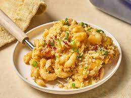

Easy Million Dollar Mac and Cheese

Description
This easy million dollar mac and cheese is super cheesy, with crumbled bacon, green onions, and a buttery, crunchy panko-Parmesan topping. Using refrigerated prepared mac and cheese saves both prep time and cleanup.
Ingredients
- 2 (20 ounce) packages refrigerated macaroni and cheese, such as Bob Evans
- 1 1/2 cups shredded white and/ or yellow sharp Cheddar cheese
- 8 slices bacon, cooked until crisp, crumbled
- 1/4 cup sliced green onions, plus more for garnish
- 1/4 teaspoon cayenne pepper
- 1/4 cup panko bread crumbs
- 1/4 cup grated Parmesan cheese
- 1/4 cup chopped slivered almonds
- 1 1/2 tablespoons butter, melted
- 1/4 teaspoon kosher salt
Steps
- Preheat the oven to 375 degrees F (190 degrees C). Add macaroni and cheese, shredded cheese, bacon, green onions, and cayenne pepper to a bowl and stir until well combined. Transfer mixture to a 2-quart baking dish.
- Bake in the preheated oven for 20 minutes.
- Meanwhile, prepare the topping: add panko, Parmesan, almonds, butter, and salt to a bowl and stir until well combined.
- Top mac and cheese with breadcrumb topping and return to the oven. Bake until lightly browned and bubbly around the edges, about 15 minutes more.
Home